P1COLOR STUDY
Tide & coral
Teal feather, cream spine, coral ink. A warm, colorful craft-tool identity.
FEATHERSPINEINK
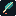
16 px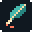
32 px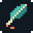
48 px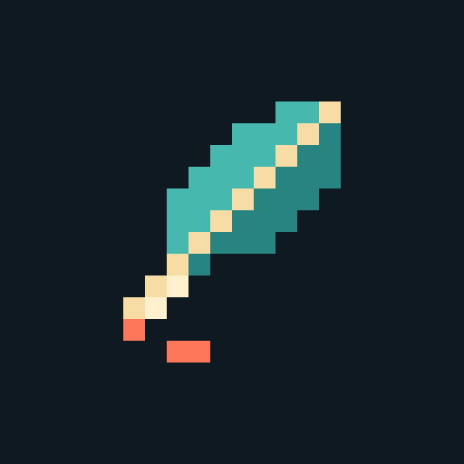
app cropspritewright×
spritewright×
The feather returns. The six palettes stay.
Teal feather, cream spine, coral ink. A warm, colorful craft-tool identity.

16 px
32 px
48 px
app cropTerracotta feather, cream spine, ice-blue ink. Warm material with a cool accent.
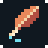
48 px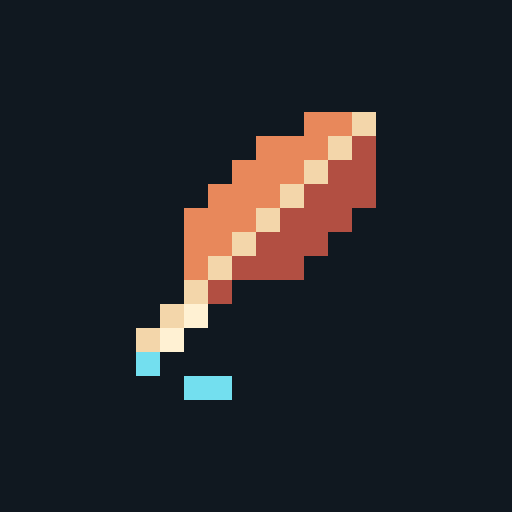
app cropCobalt feather, pale-blue spine, golden ink. Crisp and bright at small sizes.
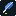
16 px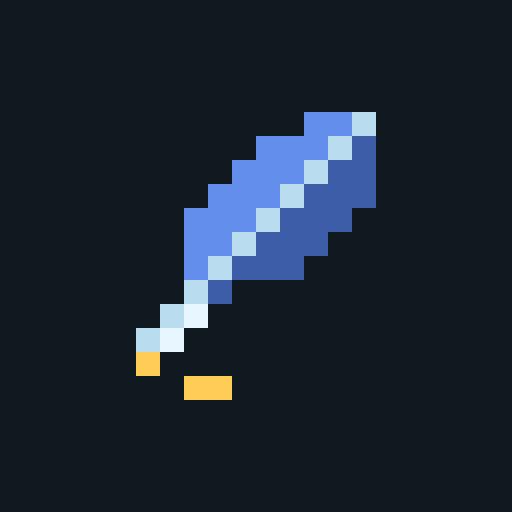
app cropLeaf-green feather, butter-yellow spine, berry ink. A natural feather palette.
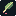
16 px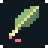
48 px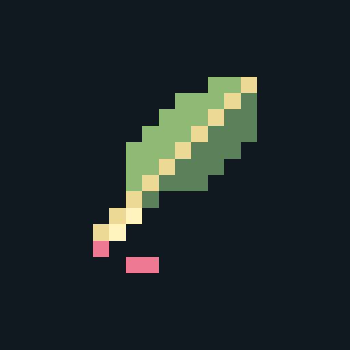
app cropViolet feather, mint spine, tangerine ink. A multicolor link to the original purple.
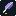
16 px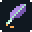
32 px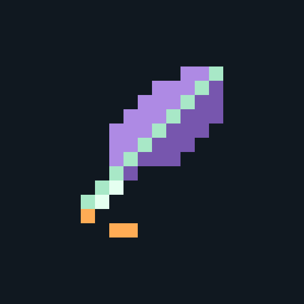
app cropSlate feather, ivory spine, vermilion ink. Understated feather, vivid drawing accent.
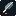
16 px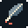
32 px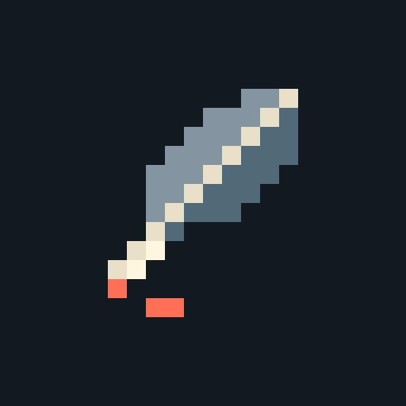
app crop